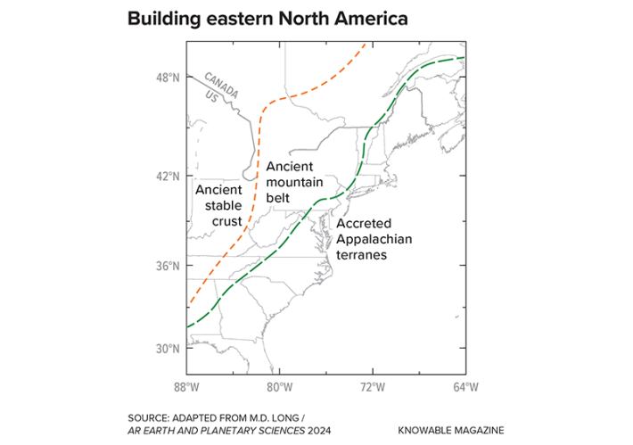

This article originally appeared inKnowable Magazine.
When Maureen Long talks to the public about her work, she likes to ask her audience to close their eyes and think of a landscape with incredible geology. She hears a lot of the same suggestions: Iceland, the Grand Canyon, the Himalayas. “Nobody ever says Connecticut,” says Long, a geologist at Yale University in New Haven in that state.
And yet Connecticut—along with much of the rest of eastern North America—holds important clues about Earth’s history. This region, which geologists call the eastern North American margin, essentially spans the U.S. eastern seaboard and a little farther north into Atlantic Canada. It was created over hundreds of millions of years as slivers of Earth’s crust collided and merged. Mountains rose, volcanoes erupted, and the Atlantic Ocean was born.
Much of this geological history has become apparent only in the past decade or so, after scientists blanketed the United States with seismometers and other instruments to illuminate geological structures hidden deep in Earth’s crust. The resulting findings include many surprises—from why there are volcanoes in Virginia to how the crust beneath New England is weirdly crumpled.
The work could help scientists better understand the edges of continents in other parts of the world; many say that eastern North America is a sort of natural laboratory for studying similar regions. And that’s important. “The story that it tells about Earth history and about this set of Earth processes … [is] really fundamental to how the Earth system works,” says Long, who wrote an in-depth look at the geology of eastern North America for the 2024 Annual Review of Earth and Planetary Sciences.
Born of continental collisions
The bulk of North America today is made of several different parts. To the west are relatively young and mighty mountain ranges like the Sierra Nevada and the Rockies. In the middle is the ancient heart of the continent, the oldest and stablest rocks around. And in the east is the long coastal stretch of the eastern North American margin. Each of these has its own geological history, but it is the story of the eastern bit that has recently come into sharper focus.
For decades, geologists have understood the broad picture of how eastern North America came to be. It begins with plate tectonics, the process in which pieces of Earth’s crust shuffle around over time, driven by churning motions in the underlying mantle. Plate tectonics created and then broke apart an ancient supercontinent known as Rodinia. By around 550 million years ago, a fragment of Rodinia had shuffled south of the equator, where it lay quietly for tens of millions of years. That fragment is the heart of what we know today as eastern North America.
Then, around 500 million years ago, tectonic forces started bringing fragments of other landmasses toward the future eastern North America. Carried along like parts on an assembly line, these continental slivers crashed into it, one after another. The slivers glommed together and built up the continental margin.
During that process, as more and more continental collisions crumpled eastern North America and thrust its agglomerated slivers into the sky, the Appalachian Mountains were born. To the west, the eastern North American margin had merged with ancient rocks that today make up the heart of the continent, west of the Appalachians and through the Midwest and into the Great Plains.

THE PLAY OF THE PLATES: When one tectonic plate slides beneath another, slivers of Earth’s crust, known as terranes, can build up and stick together, forming a larger landmass. Such a process was key to the formation of eastern North America.
By around 270 million years ago, that action was done, and all the world’s landmasses had merged into a second single supercontinent, Pangaea. Then, around 200 million years ago, Pangaea began splitting apart, a geological breakup that formed the Atlantic Ocean, and eastern North America shuffled toward its current position on the globe.
Since then, erosion has worn down the peaks of the once-mighty Appalachians, and eastern North America has settled into a mostly quiet existence. It is what geologists call a “passive margin,” because although it is the edge of a continent, it is not the edge of a tectonic plate anymore: That lies thousands of miles out to the east, in the middle of the Atlantic Ocean.
In many parts of the world, passive continental margins are just that—passive, and pretty geologically boring. Think of the eastern edge of South America or the coastline around the United Kingdom; these aren’t places with active volcanoes, large earthquakes, or other major planetary activity.
But eastern North America is different. There’s so much going on there that some geologists have humorously dubbed it a “passive-aggressive margin.”
The eastern edge of North America, running along the U.S. seaboard, contains fragments of different landscapes that attest to its complex birth. They include slivers of Earth’s crust that glommed together along what is now the east coast, with a more ancient mountain belt to their west and a chunk of even more ancient crust to the west of that.
That action includes relatively high mountains—for some reason, the Appalachians haven’t been entirely eroded away even after tens to hundreds of millions of years—as well as small volcanoes and earthquakes. Recent eastcoast quakes include the magnitude-5.8 tremor near Mineral, Virginia, in 2011, and a magnitude-3.8 blip off the coast of Maine in January 2025. So geological activity exists in eastern North America.
“It’s just not following your typical tectonic activity,” says Sarah Mazza, a petrologist at Smith College in Northampton, Massachusetts.
Crunching data on the crust
Over decades, geologists had built up a history of eastern North America by mapping rocks on Earth’s surface. But they got a much better look, and many fresh insights, starting around 2010. That’s after a federally funded research project known as EarthScope blanketed the continental United States with seismometers. One aim was to gather data on how seismic energy from earthquakes reverberated through the Earth’s crust and upper mantle. Like a CT scan of the planet, that information highlights structures that lie beneath the surface and would not otherwise be detected.
With EarthScope, researchers could suddenly see what parts of the crust were warm or cold, or strong or weak—information that told them what was happening underground.
Having the new view was like astronomers going from looking at the stars with binoculars to using a telescope, Long says. “You can see more detail, and you can see finer structure,” she says. “A lot of features that we now know are present in the upper mantle beneath eastern North America, we really just did not know about.”
There’s so much going on there that some geologists have humorously dubbed it a “passive-aggressive margin.”
And then scientists got even better optics. Long and other researchers began putting out additional seismometers, packing them in dense lines and arrays over the ground in places where they wanted even better views into what was going on beneath the surface, including Georgia and West Virginia. Team members would find themselves driving around the countryside to carefully set up seismometer stations, hoping these would survive the snowfall and spiders of a year or two until someone could return to retrieve the data.
The approach worked—and geophysicists now have a much better sense of what the crust and upper mantle are doing under eastern North America. For one thing, they found that the thickness of the crust varies from place to place. Parts that are the remains of the original eastern North America landmass have a much thicker crust, around 28 miles. The crust beneath the continental slivers that attached later on to the eastern edge is much thinner, more like 15 to 18 miles thick. That difference probably traces back to the formation of the continent, Long says.
But there’s something even weirder going on. Seismic images show that beneath parts of New England, it’s as if pieces of the crust and upper mantle have slid atop one another. A 2022 study led by geoscientist Yantao Luo, a colleague of Long, found that the boundary that marks the bottom of Earth’s crust—often referred to as the Moho, after the Croatian seismologist Andrija Mohorovičić—was stacked double, like two overlapping pancakes, under southern New England.
The result was so surprising that at first Long didn’t think it could be right. But Luo double-checked and triple-checked, and the answer held. “It’s this super-unusual geometry,” Long says. “I’m not sure I’ve seen it anywhere else.”
It’s particularly odd because the Moho in this region apparently has managed to maintain its double-stacking for hundreds of millions of years, says Long. How that happened is a bit of a mystery. One idea is that the original landmass of eastern North America had an extremely strong and thick crust. When weaker continental slivers began arriving and glomming on to it, they squeezed up and over it in places.
How the Moho is working
The force of that collision could have carried the Moho of the incoming pieces up and over the older landmass, resulting in a doubling of the Moho there, says Paul Karabinos, a geologist at Williams College in Williamstown, Massachusetts. Something similar might be happening in Tibet today as the tectonic plate carrying India rams into that of Asia and crumples the crust against the Tibetan plateau. Long and her colleagues are still trying to work out how widespread the stacked-Moho phenomenon is across New England; already, they have found more signs of it beneath northwestern Massachusetts.
A second surprising discovery that emerged from the seismic surveys is why 47-million-year-old volcanoes along the border of Virginia and West Virginia might have erupted. The volcanoes are the youngest eruptions that have happened in eastern North America. They are also a bit of a mystery, since there is no obvious source of molten rock in the passive continental margin that could be fueling them.

FAMILY HISTORY: The eastern edge of North America, running along the U.S. seaboard, contains fragments of different landscapes that attest to its complex birth. They include slivers of Earth’s crust that glommed together along what is now the east coast, with a more ancient mountain belt to their west and a chunk of even more ancient crust to the west of that.
The answer, once again, came from detailed seismic scans of the Earth. These showed that a chunk was missing from the bottom of Earth’s crust beneath the volcanoes; for some reason, the bottom of the crust became heavy and dripped downward from the top part, leaving a gap. “That now needs to be filled,” says Mazza. Mantle rocks obligingly flowed into the gap, experiencing a drop in pressure as they moved upward.
That change in pressure triggered the mantle rocks to melt—and created the molten reservoir that fueled the Virginia eruptions.
The same process could be happening in other passive continental margins, Mazza says. Finding it beneath Virginia is important because it shows that there are more and different ways to fuel volcanoes in these areas than scientists had previously thought possible. “It goes into these ideas that you have more ways to create melt than your standard tectonic process,” she says.
Long and her colleagues are looking to see whether other parts of the eastern North American margin also have this crustal drip. One clue is emerging from how seismic energy travels through the upper mantle throughout the region. The rocks beneath the Virginia volcanoes show a strange slowdown, or anomaly, as seismic energy passes through them. That could be related to the crustal dripping that is going on there.
Seismic surveys have revealed a similar anomaly in northern New England. To try to unravel what might be happening at this second anomaly, Long’s team currently has one string of seismometers across Massachusetts, Vermont, and New Hampshire, and a second dense array in eastern Massachusetts. “Maybe something like what went on in Virginia might be in process … elsewhere in eastern North America,” Long says. “This might be a process, not just something that happened one time.”
Long even has her eyes on pushing farther north, to do seismic surveys along the continental margin in Newfoundland, and even across to Ireland—which once lay next to the North American continental margin, until the Atlantic Ocean opened and separated them. Early results suggest there may be significant differences in how the passive margin behaved on the North American side and on the Irish side, Long’s collaborator Roberto Masis Arce of Rutgers University reported at the American Geophysical Union conference in December 2024.
All these discoveries go to show that the eastern North American margin, once deemed a bit of a snooze, has far more going for it than one might think. “Passive doesn’t mean geologically inactive,” Mazza says. “We live on an active planet.” 
This article originally appeared in Knowable Magazine, a nonprofit publication dedicated to making scientific knowledge accessible to all. Sign up for Knowable Magazine’s newsletter.
Lead image: The White Mountains in New Hampshire owe their dramatic topography to hundreds of millions of years of geological activity, including collisions that built up continental crust and raised mountain ranges into the sky. Credit: CO Leong / Shutterstock.